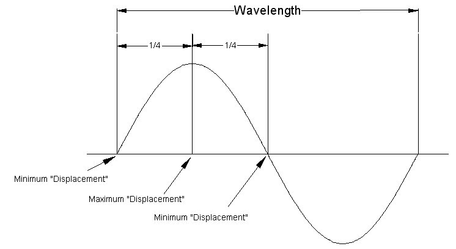
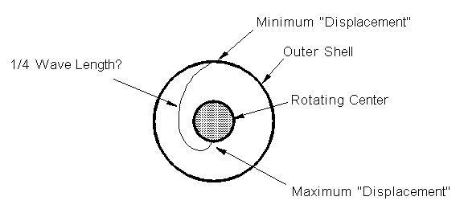
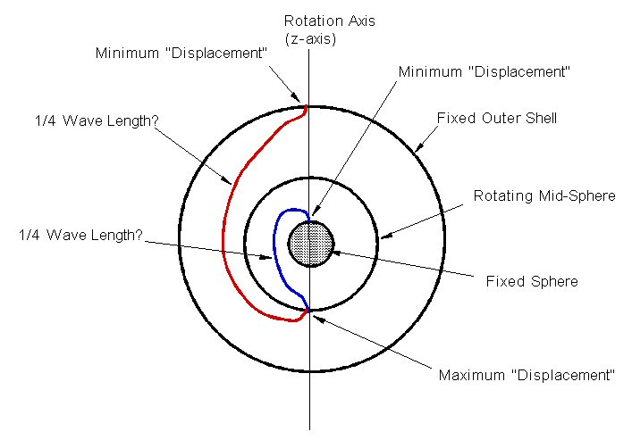

I am not satisfied with the "spherical rotation" models, animations, descriptions, etc. that I have seen. (See my WSM web pages on spherical rotation.)
Basically, they involve a rotating sphere at the center. Some people suggest shrinking the center sphere to a point at the center.
What I don't like about all this is that these models are missing half the motion or half of the pattern in the medium.
For example, consider the sine wave shown below.

Figure 1
The 1/4 wavelength has a minimum and a maximum "displacement" points. I map thsi to the spherical rotation model as follows.

Figure 2
This puts a "maximum displacement" point on the center rotating sphere.
I think the center should be a minimum displacement point. So to complete the 1/2-wave segment, add another complimentary sphere as follows.

Figure 3
Now we have a wave node at the fixed outer shell and at the inner-most fixed sphere, with a rotating mid-sphere. The mid-sphere is such that it rotates twice about the z-axis for the entire space patern to return to its original configuration.
Here is an animation. (Unfortunately the stream lines show sharp kinks. This would not actually be the case, but it is the easiest to program at the moment.)
Figure 4
Note that this now allows for higher resonances. Since the center sphere is now fixed it can become the new fixed outer shell inside of which is another spherical resonance.
Seems my "extensions" to the Spherical Rotation such that a center sphere can remain stationary is well known.
After doing this work, someone sent to me the following link to a short piece on the Dirac String Trick. Very nice animations. Check it out at http://www.evl.uic.edu/hypercomplex/movies/dirac.mpg
Usage Note: My work is copyrighted. You may reference and use my work in non-profit projects but you may not include my work, or parts of it, in any for-profit project without my consent.